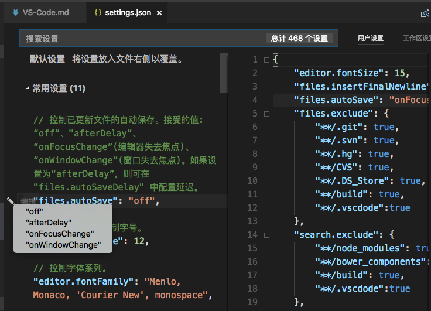

VS Code
VS Code 全称 Visual Studio Code，为方便码字，下文统一简称 Code。Code 是微软出品的跨平台代码编辑器，不管从界面风格，还是从使用体验来说，跟 Sublime Text 3 / Atom 之类的编辑器都挺像的。据说 Code 比 ST 好用，比 Atom 更快，至于事实如何，还是要自己上手，才知道是不是适合自己~
试用感想：Code 比 ST 方便使用，比 Atom 更快一些。现在 Code 插件也不少了，感觉比 ST 更容易找到需要的插件，代码分析（包括 Markdown 语法解析）比 ST 好用些，虽然响应速度上比 ST 慢，还是可以尝试从 ST 转向 Code。
Code 的功能和优点
- 支持插件扩展
- 支持语法高亮
- 更智能的代码提醒(C/C++/node/Python …)
- 支持语法检查
- 支持代码调试
- 支持代码格式化
- 内嵌控制台
- 内嵌 Git 版本控制
- 自带 Markdown 预览功能
- 秒开大文件
- 跨平台
- 免费
- 官方汉化，翻译还是挺友好的
使用介绍
支持命令行打开文件
Mac 支持命令行使用 Code 打开指定文件/目录，可以设置 alias 实现，修改 ~/.bash_profile 文件，添加：
|
重启一个命令行页面就可以用 code 命令打开文件了。
安装插件
可以点击左侧活动栏上的扩展按钮，或者实用快捷键 ⇧⌘X

在搜索栏输入需要检索的插件名称，在搜索结果列表点击安装即可，安装完成后需要重启编辑器才能生效。
配置和备份配置
VS 配置页面可以通过菜单栏打开，也可以使用快捷键打开⌘, (windows⌃,)

如图，左边是 Code 的默认配置，右边是用户自定义配置，可以看到配置项上方有详细的中文备注，支持中文搜索相关设置。点击配置项前面的图标，会弹出可选配置，选中需要的配置后，新配置会拷贝到右侧的用户配置栏，保存后就可以实时生效了。
Code 有很多实用插件，这里就先安利一个 Setting Sync。 Setting Sync 可以把本地的 Code 配置和插件列表备份到 Gist，这样就可以在不同设备同步个人设置，就算没有这类需求，备份配置也可以防止重装系统或 Code 的时候丢失配置不是。目前 Mac 和 Windows 的配置共用还没有发现大问题，就是部分插件不支持跨平台，但只在支持的平台使用就好了。（补充：考虑到部分插件需要配置路径，建议 Mac 和 Windows 的备份还是分开比较好。）
常用快捷
编辑
| 快捷键 | 说明 |
|---|---|
| ⌘X | 剪切行（空选） |
| ⌘C | 拷贝行（空选） |
| ⇧⌘K | 删除行 |
| ⌘Enter | 在下方插入行 |
| ⇧⌘Enter | 在上方插入行 |
| ⌥↓ | 当前行下移 |
| ⌥↑ | 当前行上移 |
| ⇧⌥↓ | 拷贝当前行，插入到下一行 |
| ⇧⌥↑ | 拷贝当前行，插入到上一行 |
| ⌘D | 选中下一个匹配文本 |
| ⇧⌘L | 选中所有匹配文本 |
| ⌘F2 | 选中所有匹配文本 |
| ⇧⌥I | 在选中行的每一行后面插入光标 |
| ⌘I | 选中当前行 |
| ⌥⌘↓ | 在下一行插入光标 |
| ⌥⌘↑ | 在上一行插入光标 |
| ⇧⌘\ | 跳转到匹配的闭括号 |
| ⌘] | 缩进行 |
| ⌘[ | 伸出行 |
| Home | 跳转到行首 |
| End | 跳转到行尾 |
| ⌘↓ | 跳转到文件尾部 |
| ⌘↑ | 跳转到文件开头 |
| ⌃PageDown | 向下滚动一行 |
| ⌃PageUp | 向上滚动一行 |
| ⌘PageDown | 向下滚动一页 |
| ⌘PageUp | 向上滚动一页 |
| ⌥⌘[ | 折叠代码 |
| ⌥⌘] | 展开代码 |
| ⌘/ | 行注释 |
| ⇧⌥A | 块注释 |
| ⌘F | 查找 |
| ⌥⌘F | 替换 |
| ⌘G | 查找下一个 |
| ⇧⌘G | 查找前一个 |
| ⇧⌘F | 全局搜索 |
| ⇧⌘H | 全局替换 |
| ⇧⌘J | 全局条件搜索 |
| ⌥Enter | 在所有查找匹配项后面插入光标 |
编程
| 快捷键 | 说明 |
|---|---|
| ⌃Space | 智能提醒 |
| ⇧⌥F | 格式化文档 |
| ⌘K ⌘F | 格式化选中代码 |
| F12 | 跳转到定义 |
| ⌘K ⌘I | 显示帮助 |
| ⌥F12 | 浏览定义 |
| ⇧F12 | 查看引用 |
| F2 | 重命名变量 |
导航
| 快捷键 | 说明 |
|---|---|
| ⌘T | 显示所有符号 |
| ⌃G | 跳转到指定行 |
| ⌘P | 打开文件 |
| ⇧⌘O | 跳转到符号（输入:可将符号按类别分组） |
| ⇧⌘M | 显示问题 |
| F8 | 跳转到下一个错误或警告 |
| ⇧F8 | 跳转到上一个错误或警告 |
| ⇧⌘P | 显示所有命令（其实 F1 也行~） |
| ⌃- | Go Back |
| ⌃⇧- | Go Forward |
窗口
| 快捷键 | 说明 |
|---|---|
| ⇧⌘N | 新窗口 |
| ⇧⌘W | 关闭窗口 |
| ⌘W | 关闭编辑器 |
| ⌘\ | 拆分编辑器 |
| ⌘1 | 聚焦第1个编辑器 |
| ⌘2 | 聚焦第2个编辑器 |
| ⌘3 | 聚焦第3个编辑器 |
| ⌥⌘T | 关闭其他 |
| ⌃Tab | 打开下一个编辑器 |
| ⌃⇧Tab | 打开前一个编辑器 |
文件管理
| 快捷键 | 说明 |
|---|---|
| ⌥⌘S | 保存所有文件 |
| ⇧⌘S | 另存为 |
显示
| 快捷键 | 说明 |
|---|---|
| ⌃⌘F | 全屏切换 |
| ⌘B | 变蓝切换 |
| ⇧⌘E | 焦点在文件导航和文本编辑之间切换 |
| ⇧⌘D | 调试面板 |
| ⌃⇧G | Git 管理 |
| ⇧⌘X | 插件管理 |
| ⇧⌘U | 显示输出 |
| ⇧⌘V | Markdown 预览 |
| ⌃` | 切换控制台 |
设置
| 快捷键 | 说明 |
|---|---|
| ⌘, | 打开设置页面 |
| ⌘K ⌘S | 查看快捷键 |
调试
| 快捷键 | 说明 |
|---|---|
| F9 | 设置断点 |
| F5 | 开始调试 |
| F5 | 继续执行 |
| ⌘F5 | 执行不调试 |
| F6 | 暂停 |
| F10 | Step Over |
| F11 | Step Into |
| ⇧F11 | Step Out |
| ⇧F5 | 停止调试 |